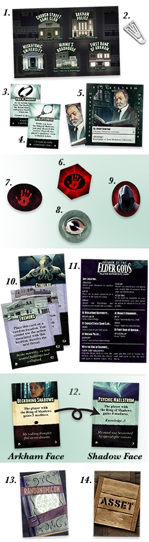
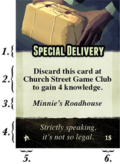
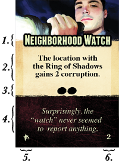
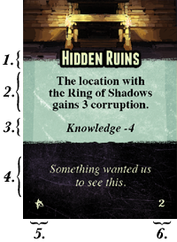

Arkham is a city under the constant threat of cosmic terror. Dark forces work behind the scenes to undermine the fabric of reality. One has the sense that if Arkham were to fall, it may spell the end of everything. But darkness has ways of being seen. The Ring of Shadows has been found... or wanted to be found, at this critical hour. It’s up to the citizens of the Miskatonic Valley to work together to wield its awful power to stop the end before it begins.
During the game, players will take turns spending actions to gather the resources they need to deal with the threat deck, a series of cards which players will need to survive to stop the elder god from awakening. The threat deck will cause madness and corruption to hinder the players. They will need to use the Ring of Shadows to undermine the threats before they grow too powerful and save Arkham... and the world.
Components:
Arkham Board
x16 Clips
Ring of Shadows Card
x4 Shadow Ability Cards
x5 Characters and Character Tokens
Threat Start Marker
x3 Threat Tokens
x10 Shadow Tokens
x10 Corruption Tokens
x12 Elder Cards
x3 Ghatanothoa Cards
x3 Yog Sothoth
x3 Nyarlathotep Cards*
x3 Cthulhu Cards
Player Reference Card
x18 Threat Cards
x6 Level 1 Threats
x6 Level 2 Threats
x6 Level 3 Threats
x10 Randonomicon Cards
x15 Asset Cards
* Note that Nyarlathotep's E1 and E2 have Randonomicon backs. Do not include these in the Randonomicon deck unless directed.

Winning and Losing It All:
Survive all of the cards in the threat deck and banish the final elder card to win the game immediately! There’s only one way to survive, but many ways to lose:
Succumb to Madness: If any player has 5 or more madnessat the end of their turn, they betray everyone to the shadows.
Shadow Network: If Arkham has 10corruption at the end of any player’s turn, the city crosses the threshold into darkness.
Elder Threat: If a threat card would exceed the threat limit for that card when a new one should be placed on it, the Elder has grown too powerful to defeat.
If any of these happen, the game is over, and you have lost.
Place the Arkham board in the center of the table.
Place the asset cards in a shuffled stack to the top-left of the board and deal out three assets face-up across the top.
Take the stack of Randonomicon cards, then shuffle and place them facedown to the top-right of the board. Be sure not to include the Nyarlathotep Elder cards!
Pick a random elder, or deliberately if you prefer, that will threaten Arkham and collect its 3 cards.
The elders vary in difficulty, but they will all provide a challenge:
Ghatanothoa is the most straight-forward elder god to battle.
Yog-Sothoth provides additional challenge based on assets.
Nyarlathotep is a uniquely difficult challenge who manipulates the Randonomicon but varies from game to game.
Cthuluhu is the most challenging and will block you from using locations with earthquakes.
Elder cards display the portrait of the elder they are associated with. Nyalathotep’s elder cards have a Randonomicon back due to how they are used during the game.
Now sort out the threat cards according to the number found in the bottom right corner.
Assemble the threat deck using the following deck construction diagram:
Please select the threat cards according to their numbers shown above at random. You will find the game much more enjoyable if you do not pay attention to the effects of the cards during setup. Cards are stacked low to high with an elder card atop every two threat cards. Place all cards, including the elder cards, so their shadow threat side is face down.
Collect the character cards and matching character tokens.
Set values for bills, knowledge, muscle, and madness to 0 on the character cards with the provided clips.
Give a random card with the matching token to each player. Character tokens do not start on a location, so place them at hand near your respective character cards.
Collect the the shadow ability cards and give a random card to each player.
Decide who goes first.
Give that player the threat start marker and the Ring of Shadows card.
Take the remaining tokens and place them off to the side organized by type.
Keep the action reference card and this rule book handy for reference! You’re ready to play!
The First Turn:
The first player should read the elder card on top of the threat deck aloud. Resolve any effects listed. When you’re done, cycle to the next threat card by placing the card on the bottom of the deck on top of the deck (see adjacent diagram). Read the new card aloud; this card represents the manifestation of the current threat hiding in the shadows. This player will skip their start phase and proceed to their action phase, read: Now you're ready to play!
After the first round, when play returns to the player with the threat start marker, the threat will cause bad things to happen to the players or Arkham. During your turn you’ll need to gather resources to defend yourselves and the city from the coming terror. if this is your first game, remember the suggestions in the first game section.
The Player's Turn:
Start Phase:
If the player possesses the threat start marker...
Place a threat token on top of the threat deck.
Resolve the effects.
If there are less than three assets available...
Slide the existing cards to the right.
If there are already three assets...
Discard the rightmost card.
Draw a new card and place it to the left of the remaining cards.
If a player has any shadow tokens but does not have the Ring of Shadows card...
Discard a shadow token.
Action Phase:
On their turn, each player may perform 3 actions.
Some actions are location specific, others can be performed anywhere (see Actions and Locations).
You can perform any action multiple times per turn.
Playing cards does not require an action unless otherwise stated.
End of Turn:
Once a player has performed all 3 of their actions and completed their turn, the player sitting to the left of the current player may begin their turn.
Characters:
The denizens of Arkham come from a myriad of backgrounds. Everyone’s experiences contribute to their ability to survive the dangers that lay before them. Each character has an advantage that represents an innate benefit gained from their experience. These advantages can affect your actions, so be mindful of them at all times. During the game, players will gain madness.
When players are mad (having 1 or more madness), they lose their advantage! See Madness for more.
Each character has limitations. Each character has values of knowledge and muscle listed along their edges. Characters cannot have more of a given resource than the values listed. The same goes for madness.
Actions and Locations:
Players take actions during their turn collect resources and deal with problems presented by the threats in the shadows. Some actions can be performed anywhere:
Success will require coordination. If a player’s character token is at the same location as another, they may spend an action to Give them resources (knowledge, muscle, bills, and/or assets).
Characters may take time to Heal themselves with the facts in order to salve their madness. Players can spend an action and one or more knowledge to lower their character’s madness by the amount of knowledge spent.
As the game progresses, threats will cause locations to become corrupt by gaining corruption tokens. Players may remove corruption tokens from a location by using the Clear action. Players can spend an action and one or more muscle to remove the same number of corruption tokens from their character’s current location.
Players may spend an action to Travel in order to move their character token to any location.
The player with the Ring of Shadows may also View the Shadows to deal with the threat deck (see The Ring of Shadows).
The Arkham board has five important locations that will be instrumental in dispelling the darkness behind reality. Each location helps players accomplish different tasks:
Miskatonic University is one of the finest of the Ivy League universities. Its extensive collections of rare books and seasoned academics make it an ideal place to Research the threats facing Arkham. Increase the knowledge on your Character Card by 1.
Church Street Game Club is one of the local gambling dens, and a reliable place to find someone to do a disreputable deed. Everyone here’s looking for money, so it’s the perfect place to Hire muscle. Spend 1 or more bills and gain the same amount of muscle.
Minnie’s Roadhouse is a rough and tumble joint where folks from all walks can grab a cheap bite and a drink. It’s also a good place to Buy and Sell information. Of course, what you get always depends on who you’re talking to. Spend a bill or a knowledge, then draw a Randonomicon card and gain the quantity of knowledge or bills shown respectively.
The Arkham Police are a formidable force, but they can be tough to rally. Players can Report strange happenings, and if you’re convincing they will come to your aid. Expend a knowledge, then draw a Randonomicon card and gain the quantity of muscle shown.
First Bank of Arkham is the city’s oldest financial institution. You’ll need money to have sway in this town. Times are difficult; money isn’t certain: take a loan, pull from savings, do what you need to. Players can try to Withdraw. Draw a Randonomicon card and gain the quantity of bills shown.
If an asset is available at their current location, players may spend an action to Acquire it for the cost in bills.
Research, Hire, Buy, Sell, Report, Withdraw, and Aquire are considered location-based actions and cannot performed freely if the location is corrupt (see Corruption).
Assets:
You’ll need to pull favors and hunt for curios to weather this storm. Asset cards represent these tools. Up to 3 assets are available at a time. All assets have a cost in bills in the bottom right corner and a location where they can be purchased.
You can only Acquire cards that are currently face-up above the board. A character may carry a maximum of 3 assets (your shadow ability card is not an asset). Using assets doesn’t cost an action unless otherwise stated. Discarded cards are removed from the game.

Name
Effect
Location
Flavor
Set Icon
Cost
Madness:
Your character will be subject to unspeakable ideas and experiences which cause them to question reality. Madness represents your inability to deal with reality. The higher the value, the closer your character comes to acting on their fear and paranoia.
When a character receives madness, increase the indicator on your character card to the correct value. If your character is mad (i.e. has one or more madness), you are unable to use your character’s advantage. Players may Heal, as an action, to lower their madness.
If you have 5 or more maddness at the end of your turn, the game is over and you have lost. You cannot have more than 10 madness.
Corruption:
Darkness will flow to the various locations of Arkham looking to gain a foothold. From insidious secret brotherhoods to eldritch creatures going bump in the night, corruption tokens represent theses influences.
When a location receives corruption, place a corruption token on the location on the Arkham board. If a location is corrupt (i.e. has one or more corruption tokens), the dark forces at work may prevent you from succeeding. Before performing any location-based actions or Acquiring assets at a corrupt location, draw a Randonomicon card. On a “SUCCESS”, the action may be performed. On a “FAILURE”, the attempt is foiled and the action is wasted. On a failure, no resources are spent. Corruption can be Cleared as an action.
If there are 10 corruption tokens on the Arkham board at the end of a player’s turn, the game is over and you have lost. You cannot have more than 10 corruption tokens on the Arkham board.
Threats:
Threat cards represent the forces that work to undermine the players’ actions. Each threat card has two sides, an Arkham face and a shadow face.
Arkham Threats
The Arkham face of a threat card represents a threat to the city which is easily seen. The top card of the threat deck represents the current threat to Arkham that players must contend with.
Each time the player with the threat start marker begins their turn, they place a threat token on top of the threat deck and resolve the effects listed on the card. This will involve applying corruption to locations or madness to players and will occasionally require drawing from the Randonomicon.

Name
Effect
Threat Limit
Flavor
Set Icon
Threat Level
The Randonomicon
This deck provides the various randomized results needed to play the game. When you see either the word “random” or a “?”, draw a Randonomicon card to determine the appropriate value. For example: If a card refers to a Random Location, draw a card from the Randonomicon and choose the Location found on that card. Drawn cards should be played face-up to a stack below the Randonomicon deck (to the right of the Arkham board). If there are no cards when you need to draw one, reshuffle the cards and place the deck face down to top-right of the board again. You may not look through either stack of cards during play.
Determining Random Players: Starting from 0, count clockwise starting with the player who draws the card and stopping at the number shown on the Randonomicon card.
Each Arkham threat has one or more dark ovals representing the maximum number of threat tokens that threat card may have on it, its threat limit. If the time comes to place a new threat token on the card and the maximum number of threat tokens is already on that card, the threat has grown too powerful, and the game is over.
Shadow Threats
The shadow face of a threat card represents a the nefarious forces working behind reality that cause the threats which plague Arkham. The bottom card of the threat deck represents the current evil that players must deal with before the Arkham threat reaches its limit.
Ridding Arkham of the current shadow threat requires the player to overcome the threat by paying the cost listed on the shadow face of the card (written in italics). Players may only pay this cost while they View the Shadows.

Name
Effect
Banish Cost
Flavor
Set Icon
Threat Level
The Ring of Shadows
To discover and deal with shadow threats, the player with the Ring of Shadows card and less than 3 shadow tokens may spend an action to View the Shadows. That player picks up the entire threat deck and turns it over to inspect the card on the back. Resolve the effects listed. Players may now banish the threat.
If the player pays the banish cost...
Flip the deck back to the Arkham face.
Remove any threat tokens.
Cycle to the next threat card by placing the card on the bottom of the deck on top.
If a player is unable to pay the cost...
Flip the deck back to the Arkham face.
Return any threat tokens.
You will need to View the Shadows again in order to banish the threat. Banishing a threat card is not an action, it is part of Viewing the Shadows.
Shadow Abilities and Tokens:
The Ring of Shadows can also provide the bearer with great power. This power is represented by your shadow ability card. While you have the Ring of Shadows, you may choose to play your shadow ability card.
Using the ring causes players to gain shadow tokens. If a player does not possess the Ring of Shadows at the start of their turn, they remove a shadow token from their character card. A player may never have more than 3 shadow tokens on their character card.
Asset and ability cards may be used at any time, even if it’s not your turn, unless the card specifies otherwise (such as requiring an action).
Your First Game:
While the rules will explain all aspects of the game, here are some suggestions to help you with your first playthrough:
Place the character tokens in their stands.
You’ll want to pick the Ghatanothoa Elder cards rather than choosing randomly. The elder cards vary in how they play, and Ghatanothoa provides the most straight-forward play experience.
Before proceeding with setup, take a moment to familiarize yourself with the elder cards and the threat cards. Each threat requires knowledge (a resource in the game) to defeat. To defeat Ghatanothoa, you’ll need to have 6 knowledge when you challenge it at the end of the game. You cannot look through the threat deck freely, so it would do you well to keep track of your progress! Each threat that comes before the final elder will also require knowledge to overcome, as noted on the shadow side of the threat cards. Keep this in mind as you construct your threat deck as each threat of the same level requires the same knowledge to banish.
During the game you will be collecting resources to aid you in your struggle: bills, knowledge, muscle and assets. Bills are the currency in the game. They’re the most flexible resource, but they can only be used to purchase other resources. Knowledge is the most powerful resource in the game. It can be used to defeat threats, lower your madness, and it can be sold for bills. Muscle is only used for fighting corruption but will cost you bills to acquire. Assets also will be available at different locations during the course of play (as noted at the bottom off the asset cards), and they’ll provide you with various useful benefits to help you survive your ordeal.
Each character is better at specific elements of the game. Pay attention to your character's advantage. Make choices that utilize it. Also make note of which resources you can hold the most of. If you do, you should have a good idea about what to do next!
Be sure to acquire assets! You'll have a much easier time if you start acquiring assets as early as possible. They will save you actions and likely your skin!
Remember that each kind of resource can be obtained in multiple ways!
The player who has the Ring of Shadows will always need more knowledge so:
If you're ever not sure what to do, acquire more knowledge!
Example Gameplay Video:
Solo Play:
This game provides a challenging solo play experience as well! While playing solo, it is recommended that you play using the 4 player setup for the game (although you may play with the setup for 2 or 3 players if you prefer). During the game you will decide the actions for all of the characters. Otherwise, the game plays as normal!
FAQ:
I think I only received 4 Elder Cards?
The original images which showed the components only showed the tall cards. There are only 4 tall Elder cards, with 2 standard sized shorter elder cards for each of the different Elders.
Do I pass the Threat Start Marker with the Ring of Shadows card?
As stated on the Ring of Shadows and shadow ability cards, the marker only moves when you use a card that says to pass the marker. Passing the Ring of Shadows does not move the threat start marker.
Wait, I'm confused, how does turn order work?
Once the game begins, play continues clockwise until the game ends. Passing the Ring or moving the threat start marker does not affect this.
Can anyone use the Automobile card once aquired?
Only the player with the Automobile may use it. It does not negate the action for movement for all players.
It looks like I'm missing my Nyarlathotep elder cards?
You probably aren't. They have a Randonomicon back instead of Nyarlathotep's portrait like the other elder cards. Be sure you don't play with them in your Randonomicon deck, or the game will be super-duper hard!
Will there be any expansions?
We hope so! No timetable as of this revision, but we have some ideas!
I'd like to know more about how this game was made!
We actually wrote a PDF on the subject. We don't have it on our store at the moment, but if you'd like to purchase a copy ($5), please email us. It covers everything from balancing to character choices. It's pretty swell if we do say so ourselves!
Hail Dion.
...
Credits:
Game Design, Business & Development: Clayton Grey
Additional Design, Graphic Design: Sam Strick
Special Thanks: Marla and Wesley Strick, Karen Richardson, Rena Northrop, Lance Moore, Nick Haas, Kimberly Sanders, Chris Dempewolf, Richard Hensman, Jeremy Petravicz, Rich Mulholland, Jake Staines, and all of our other Labrats, Luis Francisco Baroni Coutinho, Sam LaScuola, Frank Bromley, Marc J. Kolb, Gianluca Casu, Tylor Lilley, Joseph White, Aldo Ghiozzi, Dan Yarrington, and Luke Crane.
These are the 19 Kickstarter backers who made it into the game by backing at the "It's In The Cards" tier:
Shadow Whispers - Dan Charleston
Knowing Glances - Jonathan Moulds
Shadowing Shadows - Aaron Newell
Missing Persons - Josh Elliott
Uncanny Nightmare - Ethan Aguilar
Neighborhood Watch - Devin Herbster
Night Terrors - Chris Gunter
Beckoning Shadows - Marla Strick
Shadow Medium - Gustav Wedholm
Infernal Cadre - Derek Andelloux
Evil Within - Stu Horvath
Mayor Elect - Chick Lewis
Human Sacrifice - Michael C
Infernal Melodies - Steve Alcorn
Spies Amongst You - Dr. Nakagawa Kozi
Dark Congregation - Rusty Gerard
Hired Gun - Dann De Wolff
Police Escort - John Collins
New Tenants - Peter Horoszowski